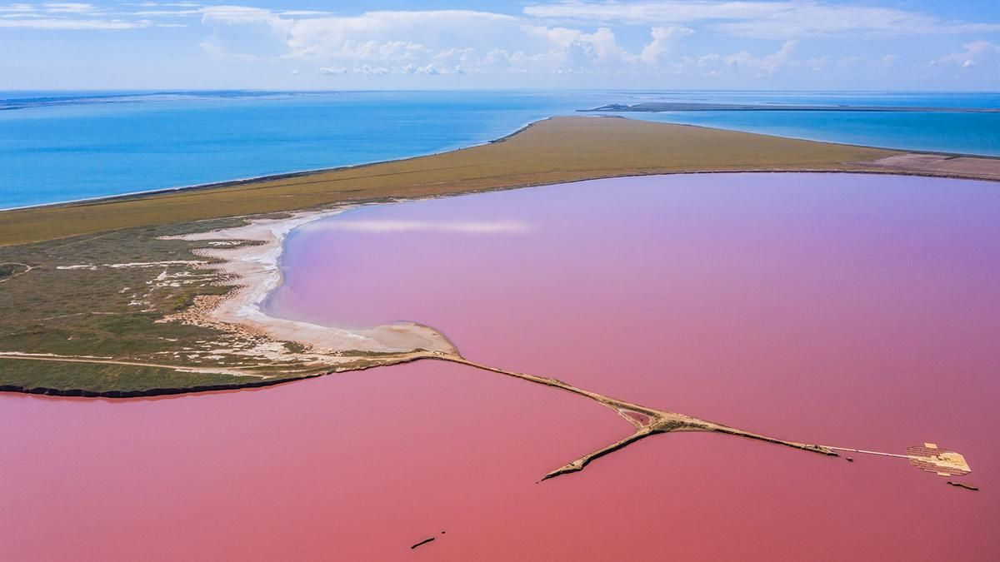

Про Рожеве озеро Сиваш
Рожеве озеро Сиваш - одне з найбільш унікальних і природно красивих місць в Україні. Знаходиться в Кримському півострові, вбираючи в себе частину Автономної Республіки Крим та Херсонської області. Це незвичайне озеро привертає увагу своїм неповторним рожевим кольором, що створює неймовірне видовище для мандрівників та фотографів.
Озеро Сиваш виникає завдяки сполученню морських вод Чорного та Азовського морів, що створює специфічні умови для розмноження певних видів водоростей та мікроорганізмів. Саме їх присутність у воді призводить до утворення рожевого відтінку. Колір озера може змінюватись в залежності від рівня сонячного світла та концентрації солей у воді. Влітку, коли сонце найяскравіше, рожевий колір стає найбільш насиченим і вражаючим.
Озеро Сиваш відоме не лише своїм рожевим кольором, а й своєю природною різноманітністю. Це місце населяється багатим видовим складом рослин і тварин. Водорості, такі як дуналіела та дуналіелла, є головним джерелом рожевого кольору. Також у водоймах зустрічаються різноманітні види водних птахів, які використовують озеро як місце для зупинки під час міграційних маршрутів. На берегах озера можна спостерігати птахів різних видів, зокрема фламінго, лебедів та пеліканів.
Рожеве озеро Сиваш також має велике значення для місцевої економіки та людей, які живуть поруч з ним. Уздовж берегів озера розташовані сільськогосподарські угіддя, де вирощують сіль. Сивашська сіль має особливі властивості та корисні мінерали, завдяки яким користується популярністю серед туристів та гурманів.
Туристи з усього світу відвідують Рожеве озеро Сиваш, щоб насолодитись його неповторним красивим видом, зробити фотографії та насолодитись миром та спокоєм цього місця. Тут можна провести час на березі озера, відвідати сільськогосподарські угіддя та спробувати свіжу сивашську сіль. Велосипедні та піші прогулянки, плавання та спостереження за дикими птахами - лише кілька з активностей, якими можна насолодитись у цьому унікальному природному куточку.
Рожеве озеро Сиваш є прикладом того, як природа може вражати своєю неповторністю та красою. Це місце створює спеціальну атмосферу, яка здатна зачаровувати і надихати людей. Відвідування Рожевого озера Сиваш - це не тільки знайомство з непересічним природним явищем, але й можливість зануритись у спокій і гармонію з навколишнім середовищем.
-
Повернутися на головну сторінку